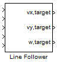

LineFollower

The Line Follower used RGB values as input and calculates the correct OmniDrive velocities to make Robotino follow a line.
Contents
Block properties
Inputs
- ComId
- R
- G
- B
- Emergency stop - set true (1) to set all the output values to 0.
Outputs
- vx, target - velocity in the x-direction in mm/s.
- vy, target - velocity in the y-direction in mm/s.
- w, target - angular velocity in degrees/s.